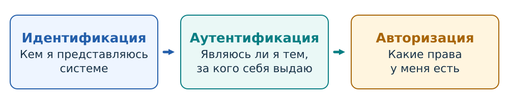

9 Управление доступом
9.1 Процедура получения доступа к ресурсу
Лена открывает задание на учебном портале и отправляет свою работу. Преподаватель Борис открывает ту же работу и выставляет оценку. Оба участника пользуются одним порталом, но выполняют разные действия. Система должна установить, от чьего имени поступает каждое обращение, и применить правила доступа к выбранному ресурсу.
Управление доступом — установление и обеспечение правил обращения к ресурсам информационной системы. Запрос описывают через субъект, объект и операцию. Субъект — активная сущность, выполняющая обращение; объект — ресурс, к которому обращаются; операция — запрошенное действие над ресурсом. Например, процесс текстового редактора записывает изменения в файл report.txt: процесс является субъектом, файл — объектом, запись — операцией. Разрешения читать файл и изменять его содержимое представляют собой разные права.
В операционной системе субъектом обычно выступает процесс или поток с определёнными полномочиями. На портале запрос к хранилищу выполняет серверная программа. Прикладное правило связывает её действие с учётной записью пользователя: «Лена отправляет работу» или «Борис выставляет оценку». Поэтому программе необходимо учитывать и того, от чьего имени выполняется действие, и свойства выбранного объекта: например, принадлежность работы к курсу А.
Политика доступа задаёт допустимые действия и условия их выполнения, а также определяет, кто назначает и отзывает полномочия. Например, студенту разрешено отправлять собственную работу, а преподавателю курса — оценивать работы участников этого курса. Монитор обращений — абстрактный механизм, который контролирует обращение субъекта к объекту и применяет действующую политику. Он получает сведения о запросе, выносит решение и обеспечивает его исполнение. При разрешении действие достигает объекта; при отказе выполнение останавливается, как показано на Рисунок 9.1.

Получение доступа включает три самостоятельные процедуры: идентификацию, аутентификацию и авторизацию (Рисунок 9.2). На портале они отвечают на три вопроса: «Какая учётная запись заявлена?», «Чем подтверждено право действовать от её имени?» и «Можно ли выполнить эту операцию?». При успешном входе система связывает сеанс с записью. При последующих обращениях она проверяет полномочия на конкретные ресурсы.

9.2 Идентификация
Идентификация устанавливает, с какой учётной записью связано обращение. При регистрации система создаёт запись и назначает ей идентификатор. При входе Лена вводит логин lena; портал находит соответствующую запись и далее использует её внутренний идентификатор. В Windows для субъектов безопасности применяются SID, в Linux учётная запись имеет числовой UID. Отображаемое имя человека позволяет узнавать его в интерфейсе, а системный идентификатор служит для однозначной связи записей и полномочий.
Логин выбирает запись для дальнейшей проверки. Его знание ещё не подтверждает право действовать от её имени: логины могут быть общедоступны. Если Борис введёт lena, портал найдёт запись Лены, но потребует подтверждение, зарегистрированное именно для неё.
Отдельного поля логина может не быть. Например, зарегистрированный ключ может сообщить сведения, по которым сервис найдёт запись. Функция идентификации при этом сохраняется: успешную проверку и последующие действия система связывает с определённой учётной записью.
9.3 Аутентификация
Аутентификация — проверка подтверждения, связанного с заявленной учётной записью. При настройке входа система устанавливает такую связь: сохраняет проверочное значение пароля, регистрирует средство получения одноразовых кодов или открытый ключ. Во время входа проверяется, может ли обращающийся предъявить соответствующее подтверждение.
Пусть для входа на портал требуется только пароль. Лена выбирает запись lena и вводит правильный пароль. Портал устанавливает сеанс, связывает его с этой записью и распознаёт следующие запросы как её действия. Чтобы решить, может ли Лена оценить работу, потребуются сведения о её полномочиях: правильность пароля этого права не устанавливает.
9.3.1 Факторы аутентификации
Фактор аутентификации — вид основания, по которому подтверждается связь обращающегося с учётной записью. Обычно выделяют знание секрета, владение средством и свойство человека. Средство аутентификации, или аутентификатор, реализует конкретную проверку: например, приложение вычисляет одноразовые коды, а аппаратный ключ создаёт криптографический ответ. Различение фактора и средства позволяет установить, на каком основании система принимает подтверждение.
9.3.1.1 Знание
Фактор знания основан на секрете, который человек знает и использует при проверке. Примеры — пароль и PIN. Для входа Лена предъявляет пароль, а портал проверяет полученное значение по заранее зарегистрированным сведениям. Успешная проверка показывает, что обращающийся смог предъявить правильный секрет. Узнавший пароль также получает возможность его предъявить. Второй пароль или секретный ответ использует тот же вид фактора.
9.3.1.2 Владение
Фактор владения основан на возможности использовать зарегистрированное средство: например, аппаратный ключ или приложение-аутентификатор. Средство хранит секретный материал и с его помощью создаёт подтверждение, которое принимает сервер. Пользователю достаточно иметь доступ к этой операции средства; запоминать его внутренний ключ не требуется.
При такой проверке сервер получает доказательство использования средства. Он обычно не наблюдает сам телефон или ключ и не устанавливает, у кого физически находится устройство. Если секретный материал удалось скопировать, другое средство сможет создавать такие же подтверждения. Защита секрета от извлечения и правила переноса между устройствами определяют, насколько надёжно подтверждение связано с зарегистрированным средством.
9.3.1.3 Свойство человека
Биометрический фактор основан на измеряемой характеристике человека: например, отпечатке пальца или изображении лица. При настройке создаётся эталон, а при проверке новое измерение сравнивается с ним по заданному правилу. Измерения одного человека отличаются друг от друга, поэтому биометрическая проверка допускает ошибки: своего пользователя можно отклонить, а постороннего — ошибочно принять.
В распространённых средствах входа биометрия проверяется локально и разрешает использование криптографического ключа. Сервис получает созданное ключом подтверждение и сведения о выполненной проверке. При такой организации биометрический образец остаётся в локальной системе.
9.3.1.4 Двухэтапная и двухфакторная аутентификация
Двухэтапная аутентификация в рассматриваемых примерах означает две последовательные обязательные проверки при входе. Например, портал сначала проверяет пароль, затем отдельное секретное слово. Обе проверки относятся к знанию.
Двухфакторная аутентификация (2FA) требует подтверждений двух разных видов. Пароль портала и код зарегистрированного приложения могут сочетать знание пароля и владение средством, создающим код. Два поля с паролями используют один вид фактора — знание. В процедуре с паролем и последующим кодом TOTP есть два этапа и два фактора. Число экранов входа может отличаться от числа проверок и факторов.
Несколько факторов может объединять одно средство. Криптографическое средство подтверждает возможность его использования, а обязательный локальный PIN или биометрия разрешают применение ключа. Если проверка активации надёжно связана с использованием средства, процедура может сочетать владение со знанием или биометрическим фактором. Важно установить, какая проверка действительно требуется: простое касание ключа подтверждает присутствие человека, а проверка PIN — знание секрета активации. Для учёта второго фактора нужно проверить, требует ли приложение локальную активацию при использовании средства и как эта проверка связана с подтверждением входа. Виды аутентификаторов и факторы в NIST SP 800-63B-4.
9.3.2 Пароль
Пароль — многократно используемый секрет для аутентификации. При настройке Лена выбирает пароль, а портал сохраняет сведения, позволяющие затем проверить предъявленное значение. При входе пароль передаётся сервису по защищённому соединению, и сервис выполняет проверку. Серверу следует хранить специальный проверочный результат, полученный из пароля, а порядок безопасного хранения разобран в разделе Глава 12.
Один и тот же пароль применяют при многих входах. Получивший его человек тоже может использовать его многократно. Если Лена введёт пароль на поддельном сайте, злоумышленник сможет предъявить полученное значение настоящему порталу. Защита соединения с поддельным сайтом не меняет этого результата: секрет уже оказался у другой стороны.
9.3.3 Одноразовые коды: OTP и TOTP
Одноразовый пароль (OTP, one-time password) — код, который предназначен для однократного успешного применения при аутентификации. Сервер проверяет код и отклоняет повторное применение уже принятого значения в пределах его допустимости. Для следующего подтверждения формируется новый код.
Код можно вычислять из общего секрета и изменяющегося значения. В HOTP таким значением служит счётчик событий: приложение и сервер согласуют, какому шагу соответствует предъявленный код. В TOTP используется время. Приложение и сервер располагают одним секретом и независимо вычисляют код для текущего временного шага.
При настройке TOTP портал создаёт секрет K и передаёт его приложению, например в QR-коде. Приложение сохраняет K; сервер связывает свою копию с учётной записью Лены. Затем при входе приложение вычисляет и показывает короткий код. Лена вводит его на портале, а сервер сравнивает с ожидаемым значением. Секрет K, часто называемый seed, при каждом входе повторно не передаётся.
Для текущего времени сначала определяется номер шага
где — начальный момент, а — длительность шага. Затем вычисляется : тот же механизм получения короткого кода использует номер временного шага вместо счётчика событий. Часто шаг длится 30 секунд. Время и параметры вычисления могут быть известны; предсказание кода затрудняется секретностью K. Алгоритм TOTP, RFC 6238.
Внутри одного временного шага приложение показывает одинаковый код: повторное открытие приложения его не меняет. Одноразовость обеспечивается также поведением сервера, который запоминает успешное применение и отклоняет повтор.
Часы приложения и сервера могут немного расходиться. Поэтому сервер может проверять коды соседних временных шагов; размер допустимого окна определяет, какие значения будут приняты. Если поддельный сайт немедленно перешлёт ещё действующий код настоящему порталу, злоумышленник может успеть использовать его первым. OTP ограничивает повторное применение подтверждения, но сама процедура ввода кода допускает такую пересылку.
9.3.3.1 TOTP как фактор владения
Секрет K хранится в приложении. Код получается из K и номера временного шага. Пользователь получает код, используя зарегистрированное приложение; он обычно не помнит K и не вводит его для входа. Именно возможность воспользоваться средством с сохранённым секретом служит основанием проверки владения.
Секретный ключ хранится в средстве и используется алгоритмом для вычисления кода. Его наличие не делает процедуру проверкой знания пользователя. Аппаратный криптографический ключ также хранит секрет, однако пользователь подтверждает возможность применить ключ. При парольной проверке основанием служит предъявление самого многократно используемого секрета, известного человеку.
Если скопировать K на другой телефон, обе копии будут вычислять одинаковые коды. Сервер по коду не различит исходное приложение и копию. Такое копирование создаёт второе средство, способное пройти ту же проверку, и нарушает исключительный контроль над секретом. Портал по коду подтверждает возможность использовать средство с зарегистрированным секретом; установить физическое наличие исходного телефона по одному коду он не может.
Если портал сначала проверяет пароль Лены, затем TOTP, процедура сочетает знание пароля с владением средством. Если приложение обязательно требует собственный PIN или биометрию для использования секрета, следует отдельно учитывать эту проверку активации. Сам seed и вычисленный код не образуют два независимых фактора.
9.3.4 Passkey: регистрация и вход
Passkey — средство аутентификации на основе пары криптографических ключей. Закрытый ключ позволяет создать подтверждение; открытый ключ позволяет проверить его. Сервис сохраняет открытый ключ, а закрытым распоряжается средство пользователя. Для каждого сервиса создаются отдельные учётные данные.
9.3.4.1 Регистрация: связать ключ с учётной записью
Пусть Лена уже вошла в портал и добавляет новый passkey. Портал выдаёт запрос на регистрацию. Браузер передаёт его выбранному средству: например, системному хранилищу ключей или аппаратному ключу безопасности. Средство создаёт пару ключей для сервиса и возвращает регистрационные данные. Сервер сохраняет открытый ключ и идентификатор учётных данных в связи с записью lena.
В результате у средства есть возможность подписывать подтверждения, а у портала — возможность проверять их для записи Лены. Регистрация нового ключа требует доверенного основания связать его с записью: например, уже выполненного входа и предусмотренной сервисом дополнительной проверки. Само создание пары ключей такой связи с человеком не устанавливает.
Passkey может быть привязан к устройству или синхронизироваться между устройствами через поставщика хранилища. Поэтому после регистрации ключ не обязательно существует только на одном телефоне. В обоих случаях сервис получает открытый ключ; закрытый ключ ему для проверки не требуется.
9.3.4.2 Вход: подтвердить свежий запрос
При следующем входе портал выдаёт новое случайное проверочное значение — challenge. Средство после необходимой локальной проверки создаёт подписанный ответ, связанный с запросом и сервисом. Браузер отправляет ответ порталу, а портал проверяет подпись сохранённым открытым ключом, соответствие выданному запросу и предусмотренные протоколом сведения о сайте и проверке пользователя. Старый ответ не подходит к новому challenge.
Браузер и протокол WebAuthn связывают применение ключа с сервисом и адресом сайта. Поддельный сайт с другим доменным именем не может запросить действительное подтверждение для настоящего портала так, как он может попросить человека ввести пароль или код. Закрытый ключ при входе сайту не передаётся. Регистрация и аутентификация WebAuthn.
Для разрешения использовать ключ устройство может потребовать PIN или биометрию. Эта проверка проходит локально: портал получает результат проверки в составе протокола, а PIN и изображение отпечатка остаются на устройстве. WebAuthn различает присутствие пользователя — например, касание аппаратного ключа — и проверку пользователя с PIN или биометрией. Сервер должен требовать и проверять нужный режим. Набор факторов конкретной процедуры зависит от обязательных проверок при использовании ключа. Проверка пользователя в WebAuthn.
Пароль, TOTP и passkey требуют разных сведений для проверки входа:
| Способ | У пользователя или его средства | На сервере | Что предъявляется при входе |
|---|---|---|---|
| Пароль | Пароль, который можно запомнить или сохранить в менеджере | Проверочное значение, полученное из пароля | Пароль по защищённому соединению |
| TOTP | Общий секрет K в приложении |
Копия K и параметры проверки |
Короткий код для временного шага |
| Passkey | Закрытый ключ под управлением средства | Открытый ключ и идентификатор учётных данных | Подписанный ответ на свежий запрос, связанный с сервисом |
9.4 Авторизация конкретного запроса
Авторизация определяет, разрешено ли установленному субъекту выполнить указанную операцию над выбранным объектом при действующих условиях. Полномочия назначаются заранее, а при обращении система применяет их к конкретному запросу.
Лена успешно вошла в Moodle и открыла задание курса А. Ей назначена роль студента: она может отправить работу, но не выставить оценку. Если Лена отправит запрос на оценивание, сервер отклонит его. Борису как преподавателю этого курса та же операция разрешена. Решение меняется при изменении назначения роли или контекста, в котором она действует.
Монитор должен контролировать защищённые пути обращения и быть защищён от обхода и изменения. На портале проверка выполняется на сервере, который сохраняет оценку. Скрытая кнопка в браузере лишь меняет интерфейс: пользователь может отправить запрос другим способом, и сервер всё равно обязан проверить полномочие. В операционной системе проверка часто происходит при открытии файла; полученный дескриптор затем позволяет выполнять операции в пределах предоставленных прав.
Политика может учитывать дополнительные условия: например, ведомость уже закрыта для правки. Сведения о полномочиях и состоянии объекта берутся из доверенного состояния системы. Поле пользовательского запроса «моя роль — преподаватель» не заменяет назначение на сервере.
Способ представления и изменения полномочий описывают модели управления доступом. В дискреционной модели существенны полномочия владельца распределять доступ, в мандатной — обязательные ограничения политики, в ролевой — связь разрешений с обязанностями пользователей.
9.4.1 Дискреционное управление доступом
При дискреционном управлении доступом (DAC, discretionary access control) владелец объекта или другой уполномоченный субъект может предоставлять права на этот объект по своему усмотрению в установленных системой пределах. Для решения о конкретном обращении проверяются уже назначенные права; для изменения доступа проверяется отдельное полномочие управлять ими.
На Рисунок 9.3 показаны два файла: «Черновик» и «Материалы». Анна владеет черновиком и может его читать и изменять. Борису она предоставила чтение; Вера доступа к черновику не получила. Когда Борис открывает файл для чтения, существующее назначение разрешает операцию. Запрос на запись отклоняется, пока Анна не предоставит ему соответствующее право.

Матрица доступа располагает субъектов по строкам, объекты по столбцам, а разрешённые операции — в клетках. Список управления доступом (ACL) собирает записи для одного объекта: кому какие действия разрешены. На рисунке выделенный столбец «Черновик» преобразован в его ACL. Обозначение r соответствует чтению, w — записи.
Матрица и ACL представляют назначения прав. Такие представления применяются и в других моделях; например, таблица может показывать права, полученные через роли. В DAC уполномоченный субъект может менять распределение доступа по своему усмотрению. На рисунке эту связь показывает владелец, который меняет ACL черновика.
Сначала сравните чтение и запись Бориса. Затем выберите вариант, в котором Анна выдала ему w: изменится запись в ACL, а проверка того же запроса на запись завершится разрешением. Изменение политики и применение политики здесь происходят на разных этапах.
9.4.2 Мандатное управление доступом
При мандатном управлении доступом (MAC, mandatory access control) обязательная политика ограничивает действия субъектов независимо от обычного усмотрения владельца объекта. Решение может учитывать метки субъектов и объектов и установленные отношения между ними.
Учебный вариант модели Белла — Лападулы защищает конфиденциальность информации. В нём заданы три упорядоченных уровня: . Файл «Материалы» (handout.txt) имеет метку , «Черновик» (draft.txt) — , «Ответы» (answers.txt) — . Процесс Лены работает на L2. Широкие полосы на Рисунок 9.5 обозначают уровни; круг обозначает действующий процесс, значки документов — объекты.

При чтении информация переходит из файла в процесс. Правило «не читать выше» разрешает чтение, если уровень процесса не ниже уровня файла. Поэтому процесс L2 читает материалы L1 и черновик L2, но не получает ответы L3.
При записи информация переходит из процесса в файл. Правило «не писать ниже» разрешает запись, если уровень файла не ниже уровня процесса. Процесс L2 может записать данные в черновик L2 или добавить данные в файл L3, но запись в материалы L1 запрещена: результат мог бы перенести сведения L2 на более низкий уровень.
В этом примере запись на L3 означает операцию без чтения существующего содержимого файла. Обычное редактирование требует обеих возможностей: прочитать файл и записать изменения. Для процесса L2 обе проверки разрешают работу с черновиком L2. Ответы L3 доступны ему лишь для предусмотренной записи без чтения, материалы L1 — лишь для чтения.
В интерактивной схеме сначала выбирается запрос, затем определяются метки процесса и файла. После этого применяется правило для выбранной операции и выносится решение. Стрелка на модели показывает направление передачи данных, а подсветка блок-схемы — выполняемую проверку. Сравните чтение ответов L3 и запись в них: уровни те же, но направление потока меняет результат.
Для проверки берётся текущий уровень процесса. Если допуск Лены позволяет ей работать до L3, запущенный на L2 процесс всё равно проверяется по L2. Показанный процесс Бориса на L3 может читать ответы, однако записать полученные сведения в материалы L1 ему запрещено. Так политика препятствует переносу закрытой информации вниз по шкале.
9.4.3 Ролевое управление доступом
При ролевом управлении доступом (RBAC, role-based access control) разрешения объединяются по обязанностям в роли, а пользователям назначаются роли. Роль связывает организационную функцию с набором действий: например, студент отправляет работу, преподаватель оценивает её. Изменение обязанностей выражается в изменении назначений.
На Рисунок 9.7 Лене и Илье назначена роль «Студент», Борису — «Преподаватель». Обе роли разрешают открыть задание. Студенту дополнительно разрешено отправить работу, преподавателю — оценить работу. Все эти назначения действуют в курсе А.

Проверку можно проследить как путь пользователь → назначенная роль → требуемое разрешение. Для запроса Лены «отправить работу» существует путь через роль студента. Для запроса «оценить работу» у Лены такого пути нет. У Бориса оценивание разрешено через роль преподавателя. Если курс получит ещё одного студента, ему достаточно назначить существующую роль; связи роли с разрешениями сохраняются.
Сначала сравните запросы Лены на открытие, отправку и оценивание. Затем выберите оценивание от имени Бориса.